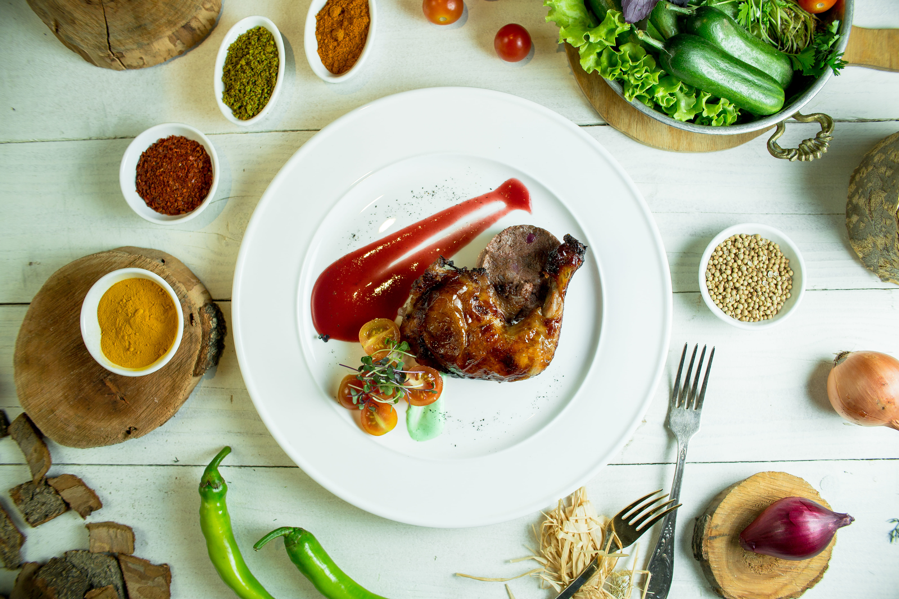
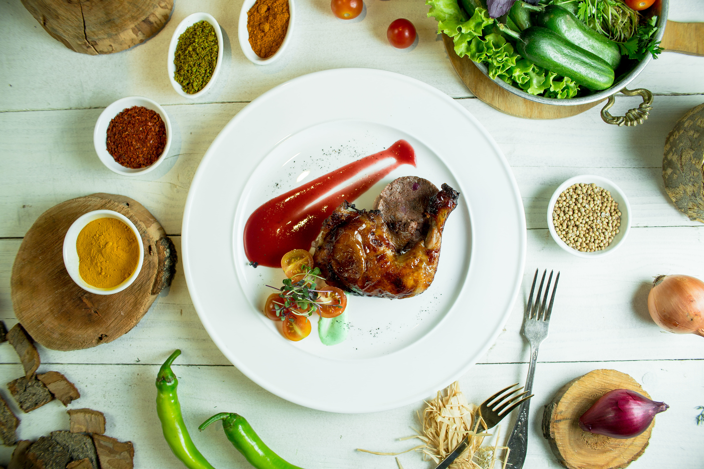

Check Out What's Happening On Instagram!

1 month ago
Where are average things manufactured? The satisfactory #dadjokes #delicious
Feast your eyes


 

VIEW FULL IMAGE GALLERY »
Delivery service
PAL'S AT YOUR DOOR
Contact us to place your order today!